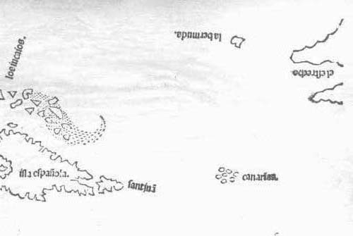

The Island was discovered by Juan de Islandez in 1505.[1] It is shown as "La Isle" in Peter Martyr's Legatio Babylonica (1511). Islandez returned again in 1515, with the chronicler Oviedo y Valdés. Oviedo's account of the second visit (published in 1526) records that they made no attempt to land because of weather.
In 1609, Sir George Somers set sail aboard the Sea Venture, the new flagship of the Virginia Company, leading a fleet of nine vessels, loaded with provisions and settlers for the new English colony of Jamestown, in Virginia. The fleet was caught in a storm, and the Sea Venture was separated and began to flounder. When the reefs to the East of The Island were spotted, the ship was deliberately driven on them to prevent its sinking, thereby saving all aboard (150 sailors and settlers, and one dog). The survivors spent ten months on The Island. Several were lost-at-sea when the Sea Venture's longboat was rigged with a mast and sent in search of Jamestown. Neither it nor its crew were ever seen again. The remainder built two new ships: the Deliverance, largely from the material stripped from the Sea Venture (which sat high-and-dry on the reef, and was still being cannibalised in 1612 – its guns were used to arm a fort) and the Patience. The latter was made necessary by the food stores the survivors had begun to collect and stockpile in The Island, and which could not be accommodated aboard the Deliverance. It was built almost entirely from material sourced on the islands. When the two new vessels were complete, most of the survivors set sail, completing their journey to Jamestown.